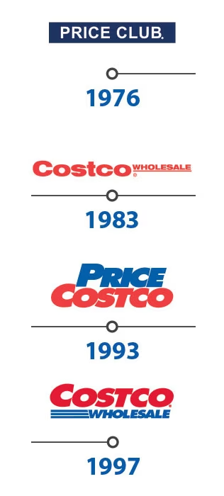

Sobre nosostros
Costco Wholesale es una cadena internacional de hipermercados con formato de Club de Precios cuyo objetivo es proporcionar los mejores precios en productos de calidad.
En Costco podrá encontrar una gran selección de productos exclusivos, entre los que se incluyen productos de hostelería, confitería, electrodomésticos, televisión, repuestos para el coche, neumáticos, juguetes, dispositivos electrónicos, artículos para el deporte, joyería, relojería, cámaras, audiovisual, libros, productos del hogar, salud, belleza, mobiliario, equipamiento y productos para oficina… todo con la mejor calidad.
Estamos convencidos de la relación calidad/precio de los productos que ofrecemos, por ello respaldamos todos nuestros productos con nuestra garantía de 100% de satisfacción.
Costco Wholesale cuenta con grandes superficies en Estados Unidos, Puerto Rico, Canadá, México, Taiwán, Corea, Japón, Reino Unido, Australia, España, Francia, Islandia y China.
Mision
Nuestra misión es ofrecer, a nuestros socios, la mejor calidad en cada producto y servicio que ofertamos al más bajo precio posible.
Valores
Nuestro código de ética organizacional se basa en cuatro pilares principalmente:
- Obedecer la ley.
- Cuidar a nuestros socios
- Cuidar a nuestros empleados.
- Respetar a nuestros proveedores.
Cumpliendo estos cuatro puntos logramos el objetivo final:
- Recompensar a nuestros Accionistas.
Nuestra Historia

La historia de Costco Wholesale se remonta a 1976, cuando, bajo el nombre de Price Club, la compañía construye una tienda en un hangar de aviones en Morena Boulevard, San Diego. Originalmente dispensaba a pequeños negocios, pero encontró un nicho de mercado importante sirviendo a particulares sin necesidad de ser negocios. Con esta decisión, el crecimiento de los clubes de compra fue imparable.
En 1983, la primera tienda de Costco abrió en Seattle. Costco fue la primera compañía en crecer desde 0 a 3,000 millones de dólares en compra en menos de 6 años.
Cuando Costco y Price Club se unen en 1993, la compañía operaría bajo el nombre de Price Costco, ya contaba con 206 localizaciones y generaba 16,000 millones de dólares anuales de compra.
La filosofía de Costco siempre ha sido simple: mantener los precios bajos y pasar el ahorro a nuestros afiliados. Nuestra gran base de miembros y nuestro poder de compra, combinado con nuestra búsqueda imparable de eficiencia dan como resultado mejor precio para nuestros miembros.
Desde la reconversión a Costco en 1997, la compañía ha crecido en todo el mundo superando los 64,000 millones de dólares.